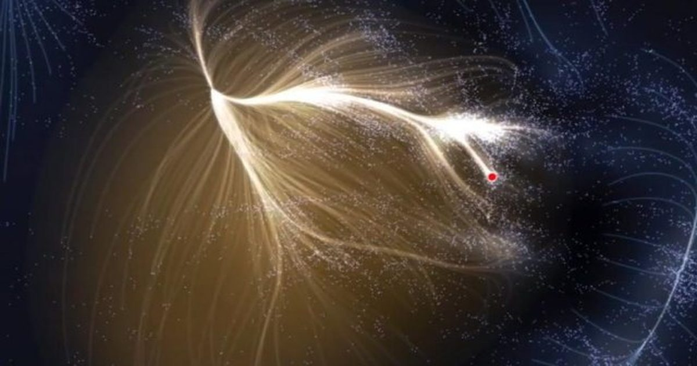

Эти 5 делений определяют, как далеко мы можем зайти в космосе
В этой Вселенной то, что вы можете видеть, не означает, что вы можете достичь ее.
И наоборот, то, что вы не видите его сегодня, не обязательно означает, что его свет не появится завтра.
Поскольку ткань самой Вселенной расширяется, и поскольку максимальная скорость, с которой любой сигнал — массивный или безмассовый — может проходить через эту ткань пространства, конечна, есть и то, и другое: места, которые мы в настоящее время можем видеть, что мы никогда не сможем